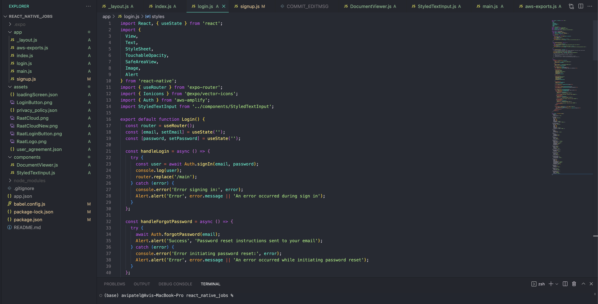
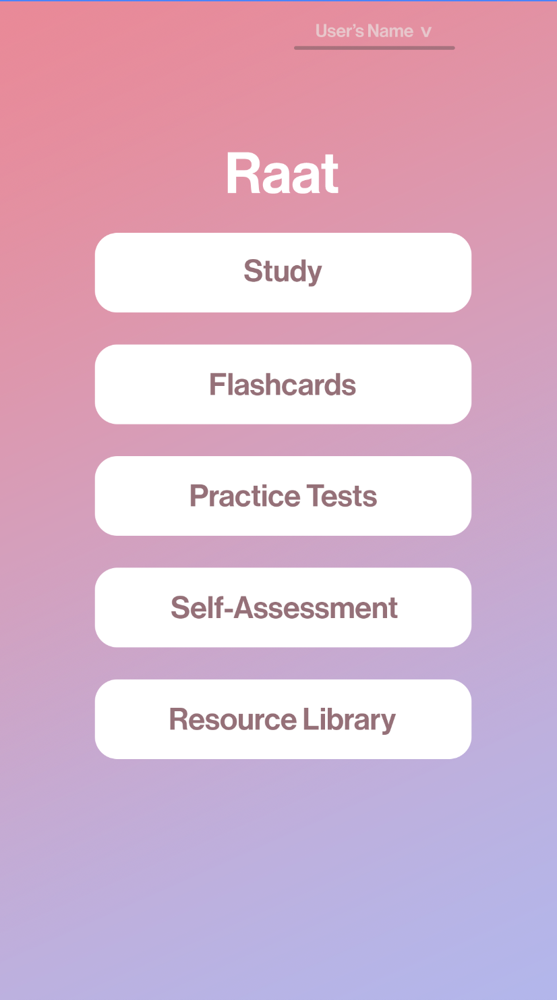

About Me
Language/Library Proficiency:
- Python
- Java
- React
- Kotlin
Some of my hobbies include:
- Gaming
- The gym
- Space
- Artificial Intelligence
- Robotics
Picture of Something I Enjoy

Language/Library Proficiency:
Some of my hobbies include:
This app helps users to convert specific real-time currencies using an API It will automatically find your location with permission as well as allow the user to connect chains of different country's currencies for trading purposes.
This application allows intended users (farmers) to be able to control drones for various task-related errands from monitoring animal health and GPS location to checking soil composition for crop well-being.
Currently in development, but the main goal of this application is to help pre-med students study for the MCAT using various resources from online textbooks to flashcards and personal assessments to determine their weakpoints for free.
 